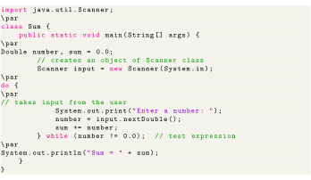
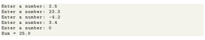

Next: Infinite while Loop Up: Java while loop Previous: How while loop works? Contents
The do...while loop is similar to while loop with one key difference. The body of do...while loop is executed for once before the test expression is checked. Here is the syntax of the do...while loop.

The body of do...while loop is executed once (before checking the test expression). Only then, the test expression is checked. If the test expression is evaluated to true, codes inside the body of the loop are executed, and the test expression is evaluated again. This process goes on until the test expression is evaluated to false. When the test expression is false, the do...while loop terminates.
The following program calculates the sum of numbers entered by the user until user enters 0. To take input from the user, we have used the Scanner object. To learn more about Scanner, visit Java Scanner.

Output
